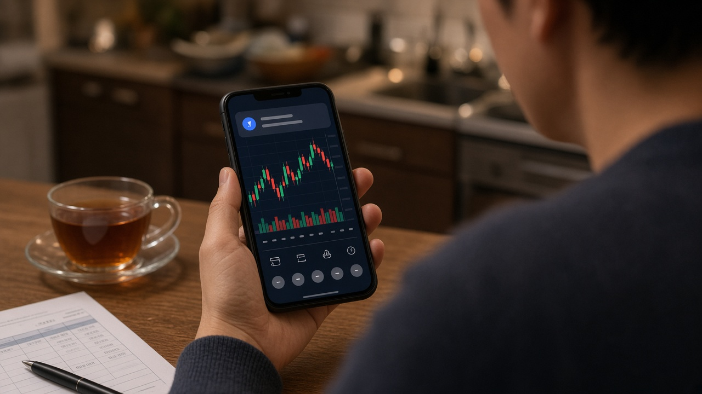

증권사 주식정보 서비스, 무료체험 끝나면 자동 유료 전환이 막히고 이용료를 따로 알려 줘요

주식 앱을 쓰다 보면 종목 추천이나 수급 분석을 한 달 무료로 써 보라는 안내를 한 번쯤 보셨을 거예요.
눌러서 가입해 두고 잊어버리면, 그다음부터 매매할 때마다 생각보다 많은 수수료가 빠져나가고 있을 수 있어요.
실제로 10년 전에 이런 서비스에 가입하고 안내를 따로 받지 못해 가입 사실을 잊은 채 이용료를 계속 냈다는 민원이 들어왔다고 해요.
금융감독원은 11월 11일 증권사 주식정보 제공서비스의 이용료 안내를 강화하고, 무료체험 뒤 자동으로 유료 전환하는 방식을 막는 개선방안을 내놨어요.
무엇이 달라지는지, 지금 내 계좌는 어떻게 확인하면 좋은지 차례로 정리해 볼게요.
주식정보 제공서비스가 뭐고 왜 문제가 됐을까요
주식정보 제공서비스는 증권사가 유료로 가입한 투자자에게 종목 추천이나 수급 분석 같은 정보를 주는 서비스예요.
증권사가 인공지능을 활용해 직접 정보를 만들기도 하고, 유사투자자문업자 같은 외부 업체와 제휴해 그 업체의 정보를 전달하기도 해요.
금감원 점검 결과 이 서비스를 유료로 운영하는 증권사는 12곳이고, 이용 고객은 10만 3천 명으로 전체 고객의 0.23퍼센트 정도였어요.
그런데 지난해 증권사들이 이 서비스로 거둔 수수료 수익은 671억 원에 이르렀어요.
문제는 가입한 뒤에 이용료 안내가 충분하지 않았다는 점이에요.
이용료가 매매수수료에 섞여 나가다 보니 투자자는 자기가 서비스 요금을 따로 내고 있다는 사실을 알아차리기 어려웠던 거죠.
정률제와 정액제, 내 부담은 이렇게 달라져요
이용료를 받는 방식은 크게 두 가지예요.
정률제는 거래금액에 비례해 서비스 하나당 약 0.05퍼센트에서 0.25퍼센트를 받는 방식이에요.
이 요율이 기본 매매수수료를 대신하거나 그 위에 더해지는 구조라서, 거래를 많이 할수록 부담이 빠르게 커져요.
정액제는 신청한 서비스 개수에 따라 한 달에 1만 원 안팎을 기본 매매수수료와 별도로 내는 방식이에요.
금감원이 든 가상 예시를 보면 차이가 확실히 보여요.
기본 매매수수료율이 0.015퍼센트인 투자자가 한 달에 1천만 원을 거래하면 기본 수수료는 1천500원이에요.
여기에 0.1퍼센트 정률제 서비스를 쓰면 한 달에 1만 원을 내게 돼서 8천500원이 더 나가요.
월 1만 원 정액제 서비스에 가입했다면 기본 수수료까지 합쳐 1만 1천500원이 되고요.
거래금액이 한 달 5천만 원으로 늘면 기본 수수료는 7천500원인데, 정률제 서비스를 쓰면 5만 원이 돼서 4만 2천500원을 더 내는 셈이에요.
본인 거래 규모를 생각하지 않고 가입하면 정보 이용료가 매매 비용보다 훨씬 커질 수 있다는 뜻이에요.
가입 전후 안내가 이렇게 바뀌어요
앞으로 증권사는 가입하기 전에 서비스 가입 전 매매수수료와, 가입 후 매매수수료에 서비스 이용료를 더한 금액을 구체적인 예시와 함께 비교해서 보여 줘야 해요.
가입한 뒤에도 앱 알림이나 문자로 서비스를 이용 중이라는 사실과 가입 전후 수수료율을 정기적으로, 또 필요할 때마다 알려야 하고요.
모바일 주식 앱과 컴퓨터용 주식 프로그램의 수수료 확인 화면에도 서비스 이용료가 어떻게 매겨지는지 따로 표시하도록 했어요.
투자자가 세부 내역을 달라고 하면 기본 매매수수료와 서비스 이용료를 나눠서 보여 줘야 하고, 둘을 합쳐서 하나로 안내하는 건 금지돼요.
지금 서비스를 쓰고 있는 고객에게는 가입 사실과 해지할 수 있는 인터넷 주소를 문자나 알림톡으로 한꺼번에 안내할 예정이라고 해요.
무료체험 뒤 자동 유료 전환은 이제 안 돼요
이번 개선에서 가장 체감이 큰 부분은 무료체험 이벤트예요.
그동안 일부 증권사는 무료 이용 기간이 끝나면 따로 묻지 않고 유료 회원으로 바꾸는 방식의 이벤트를 운영해 왔어요.
앞으로는 무료체험이 끝나면 원칙적으로 서비스가 종료되고, 유료로 계속 쓰겠다고 명시적으로 동의한 투자자에게만 서비스를 이어서 제공해야 해요.
증권사는 이벤트가 끝나기 전에 참여한 고객 모두에게 유료 전환 여부를 확인하고, 의사를 밝히지 않은 고객은 서비스를 끝내야 해요.
금감원은 금융투자협회와 업계와 함께 세부 이행방안을 만들어 2027년 1분기까지 개선을 마치는 것을 목표로 하고 있어요.
지금 내 계좌에서 확인해 볼 것들
제도가 바뀌기 전이라도 내 계좌는 지금 바로 확인해 볼 수 있어요.
먼저 쓰고 있는 증권사 앱에서 수수료나 서비스 가입 내역 메뉴를 열어 주식정보 서비스나 투자정보 서비스에 가입돼 있는지 살펴보세요.
가입돼 있다면 정률제인지 정액제인지, 적용되는 요율이 얼마인지 확인하고 내 한 달 거래금액에 대입해 보면 실제 부담이 보여요.
예전에 무료체험 이벤트에 참여한 적이 있다면 체험 기간이 끝난 뒤 유료로 바뀌지 않았는지도 같이 확인해 두는 게 좋아요.
화면에서 찾기 어렵다면 증권사 고객센터에 서비스 가입 여부와 기본 매매수수료, 서비스 이용료를 나눠서 알려 달라고 요청하면 돼요.
이 서비스가 주는 정보가 수익을 보장하는 건 아니니, 비용을 먼저 따져 보고 필요할 때만 쓰는 게 맞아요.
참고 자료 금융감독원 2026년 11월 11일 보도자료 증권사의 주식정보 제공서비스 이용시 숨어있는 이용료를 미리 확인하고 이용하세요, 연합뉴스 2026년 11월 11일 증권사 주식정보서비스 수수료 671억원 금감원 안내 강화, 파이낸셜뉴스 2026년 11월 11일 증권사 주식정보서비스 이용료 따로 알린다 자동 유료전환 금지
태그 주식정보제공서비스 증권사수수료 무료체험자동결제 매매수수료 주식앱수수료 금융감독원 종목추천서비스 정률제수수료 주식투자비용 증권사해지